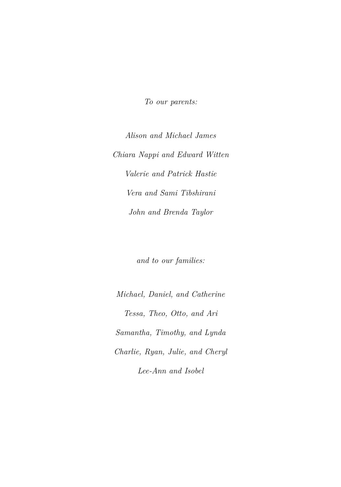

Preface#
However, in recent years Python has become an increasingly popular language for data science, and there has been increasing demand for a Pythonbased alternative to ISLR. Hence, this book, An Introduction to Statistical Learning, With Applications in Python (ISLP), covers the same materials as ISLR but with labs implemented in Python — a feat accomplished by the addition of a new co-author, Jonathan Taylor. Several of the labs make use of the ISLP Python package, which we have written to facilitate carrying out the statistical learning methods covered in each chapter in Python. These labs will be useful both for Python novices, as well as experienced users.
Statistical learning refers to a set of tools for making sense of complex datasets. In recent years, we have seen a staggering increase in the scale and scope of data collection across virtually all areas of science and industry. As a result, statistical learning has become a critical toolkit for anyone who wishes to understand data — and as more and more of today’s jobs involve data, this means that statistical learning is fast becoming a critical toolkit for everyone.
One of the first books on statistical learning — The Elements of Statistical Learning (ESL, by Hastie, Tibshirani, and Friedman) — was published in 2001, with a second edition in 2009. ESL has become a popular text not only in statistics but also in related fields. One of the reasons for ESL’s popularity is its relatively accessible style. But ESL is best-suited for individuals with advanced training in the mathematical sciences.
An Introduction to Statistical Learning, With Applications in R (ISLR) — first published in 2013, with a second edition in 2021 — arose from the clear need for a broader and less technical treatment of the key topics in statistical learning. In addition to a review of linear regression, ISLR covers many of today’s most important statistical and machine learning approaches, including resampling, sparse methods for classification and regression, generalized additive models, tree-based methods, support vector machines, deep learning, survival analysis, clustering, and multiple testing.
Since it was published in 2013, ISLR has become a mainstay of undergraduate and graduate classrooms worldwide, as well as an important reference book for data scientists. One of the keys to its success has been that, beginning with Chapter 2, each chapter contains an R lab illustrating how to implement the statistical learning methods seen in that chapter, providing the reader with valuable hands-on experience.
The intention behind ISLP (and ISLR) is to concentrate more on the applications of the methods and less on the mathematical details, so it is appropriate for advanced undergraduates or master’s students in statistics or related quantitative fields, or for individuals in other disciplines who wish to use statistical learning tools to analyze their data. It can be used as a textbook for a course spanning two semesters.
We are grateful to these readers for providing valuable comments on the first edition of ISLR: Pallavi Basu, Alexandra Chouldechova, Patrick Danaher, Will Fithian, Luella Fu, Sam Gross, Max Grazier G’Sell, Courtney Paulson, Xinghao Qiao, Elisa Sheng, Noah Simon, Kean Ming Tan, Xin Lu Tan. We thank these readers for helpful input on the second edition of ISLR: Alan Agresti, Iain Carmichael, Yiqun Chen, Erin Craig, Daisy Ding, Lucy Gao, Ismael Lemhadri, Bryan Martin, Anna Neufeld, Geoff Tims, Carsten Voelkmann, Steve Yadlowsky, and James Zou. We are immensely grateful to Balasubramanian “Naras” Narasimhan for his assistance on both ISLR and ISLP.
It has been an honor and a privilege for us to see the considerable impact that ISLR has had on the way in which statistical learning is practiced, both in and out of the academic setting. We hope that this new Python edition will continue to give today’s and tomorrow’s applied statisticians and data scientists the tools they need for success in a data-driven world.
It’s tough to make predictions, especially about the future.
-Yogi Berra